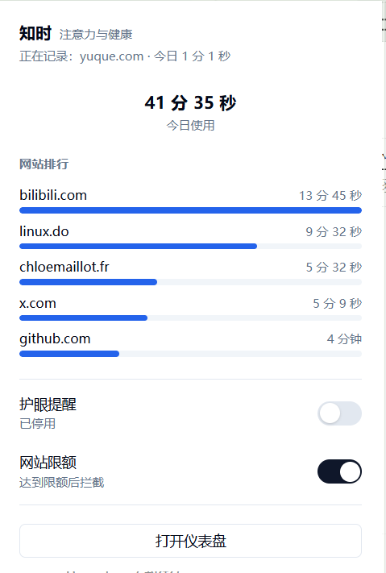
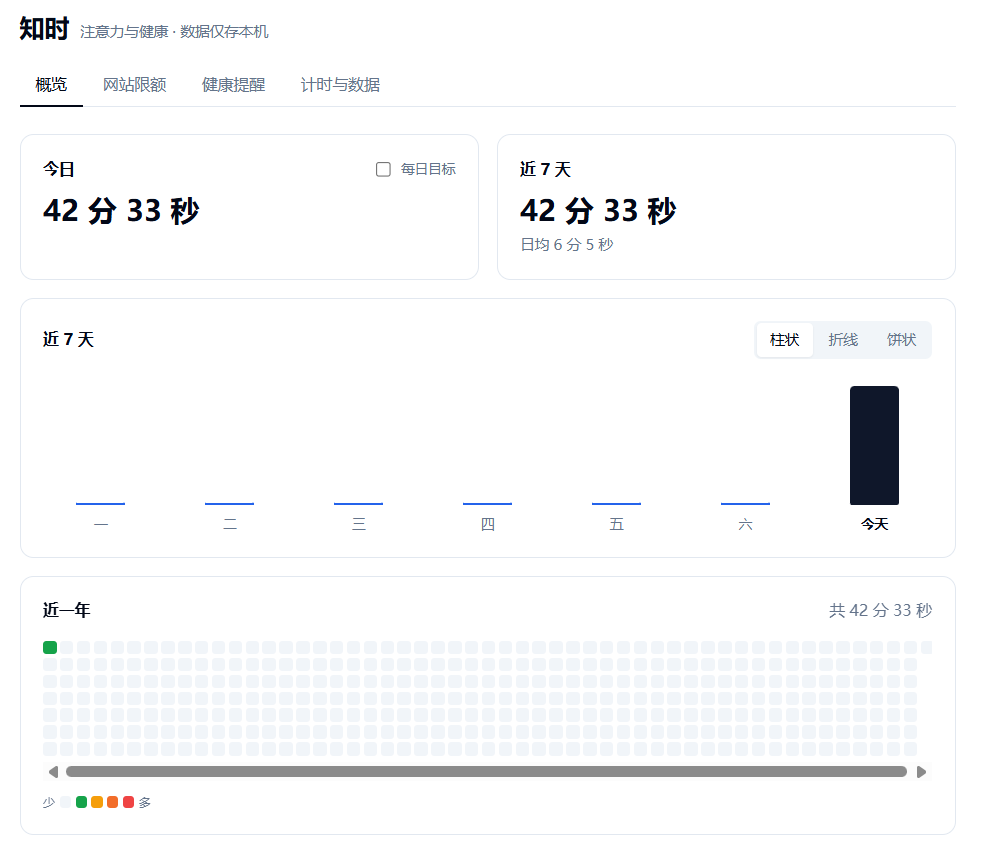
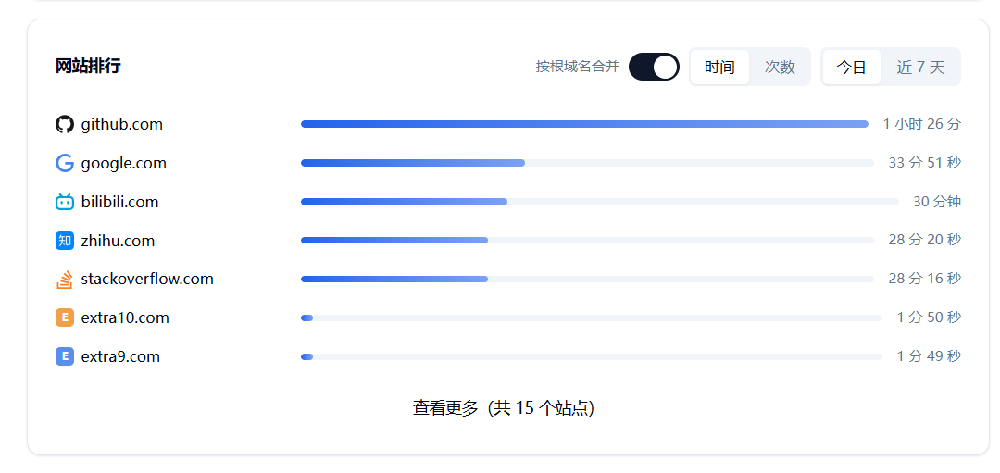
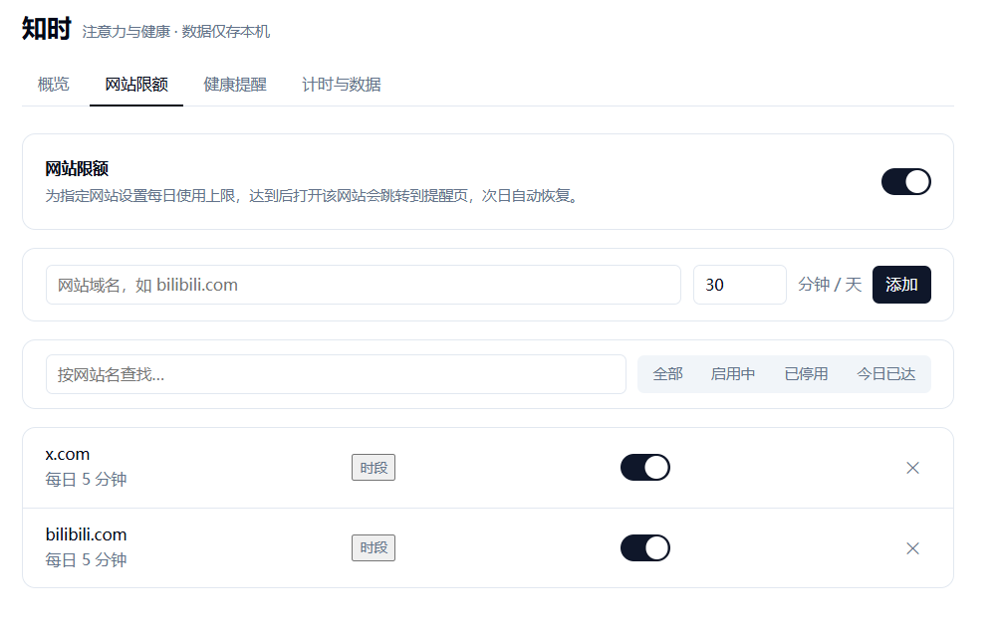
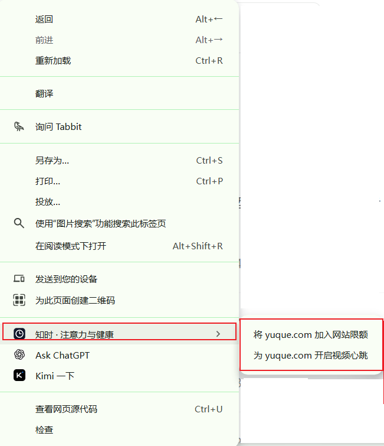
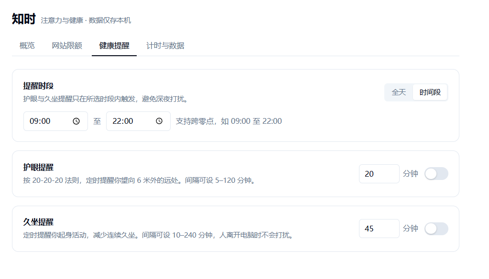
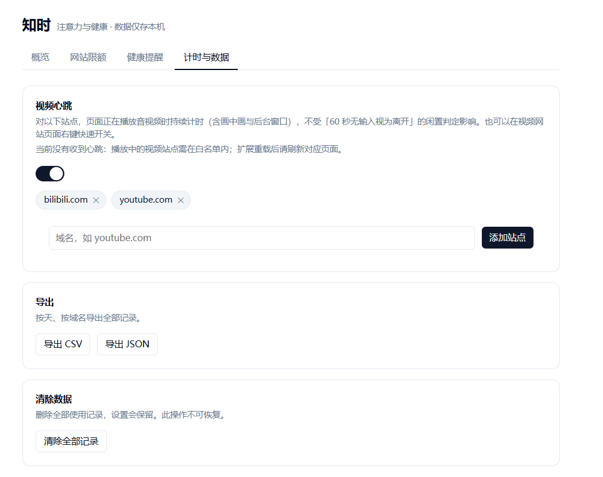

2026 年 9 月 27 日 · 约 6 分钟读完
一个不催促你的上网计时器
每天结束时，我很难回答一个简单的问题：今天的时间去了哪里。市面上的时间统计工具要么要注册账号、把浏览记录传到别人的服务器上，要么弹满提醒、把人变成被管理的对象。于是我做了「知时」——一个只记录、不评判、数据不出本机的浏览器扩展。
先说最重要的：数据只属于你
知时没有账号体系，没有云端同步，也没有任何统计上报。所有记录写在浏览器的本地存储里，卸载扩展的那一刻，一切随之消失。它只记录域名与时长，不保存完整网址，不读取页面内容。这不是技术限制，而是产品的前提——一个关于「注意力」的工具，第一步就是不制造新的隐私焦虑。
计时必须诚实
时间统计最容易撒谎的地方，是把「标签页开着」当成「人在使用」。知时的口径很严格：标签页处于活跃状态、浏览器窗口在前台、系统非闲置——三个条件同时满足才计时。你切去写代码，它就停下来；你锁屏离开，它也停下来。看视频时例外：只要音视频在播放，即使几分钟没有键鼠输入，视频心跳也会让计时继续。

一周与一年，两种注视的距离
弹窗回答「现在」，仪表盘回答「过去」。近 7 天支持柱状、折线、饼状三种看法；年度热力图用了一套有语义的颜色——绿是 1 小时以内，黄是 1 到 3 小时，橙是 3 到 6 小时，红是超过 6 小时。颜色不再依赖每天的相对值，而是跨天可比的绝对刻度：一片橙色里冒出的那格红，一眼就知道是哪天刷过头了。

排行：今天和这一周
网站排行可以在「今日」与「近 7 天」之间切换。默认只展示前 7 名——不是舍不得给你看，而是让页面保持安静；想知道更完整的名单，点一下「查看更多」就好。
默认还会把同一根域名的子域合并成一行：linux.do 和 cdk.linux.do 算作同一个站点，免得一个站被你用出十几个分身。想看清每个子域各用了多久，把「按根域名合并」关掉就回到完整明细——记录层一直是完整域名，随时可查。

限额：温和，但坚定
给某个网站设一个每日上限，到点之后再看它，会被带到一个安静的提醒页——不是弹窗轰炸，是一整页的「今天到这里吧」，明天自动恢复。限额还支持时段屏蔽：23 点到早上 8 点直接拦截，不受分钟数影响。如果确实需要，可以放行 10 分钟，但删除限额重新设置时，放行也会随之作废——工具不和你玩心眼。

右键，两秒完成
在任何网页上右键，菜单里就有「将当前网站加入网站限额」和视频心跳的开关——点击直达设置页，域名已经填好。让一个功能被用起来最好的方式，是把它放在它该发生的地方。

提醒你，但不打扰你
护眼提醒按 20-20-20 法则定时让你望向远处，久坐提醒催你起来走走，间隔都可以自定义。它们只在设定的时段内出现——深夜不会响，人离开电脑也不会响。提醒的意义是把你拉回来，而不是制造新的噪音。

以及，随时带走你的数据
全部记录可以按天、按域名导出为 CSV 或 JSON。数据在你手里，才有资格谈「数据仅存本机」。

安装
- 下载或克隆本仓库，得到
browser-extension文件夹 - 打开
chrome://extensions（Edge 为edge://extensions） - 打开「开发者模式」，点「加载已解压的扩展程序」，选择该文件夹
- 固定到工具栏，开始使用
需要 Chrome 或 Edge 116 及以上版本。不需要注册，不需要联网授权，装完即用。